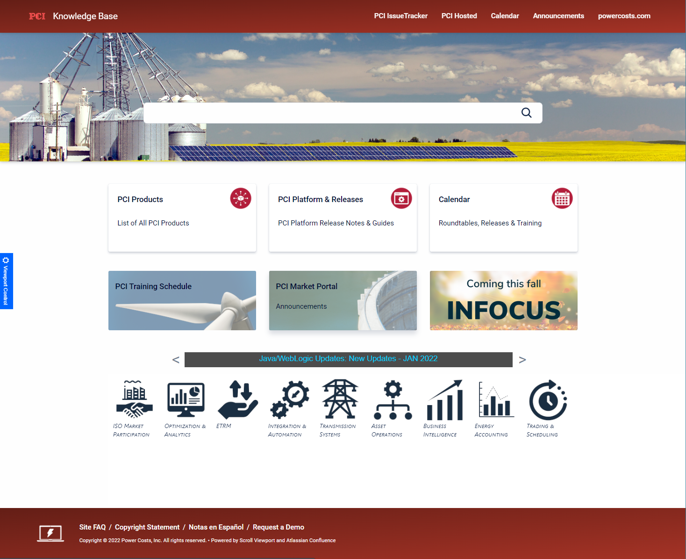
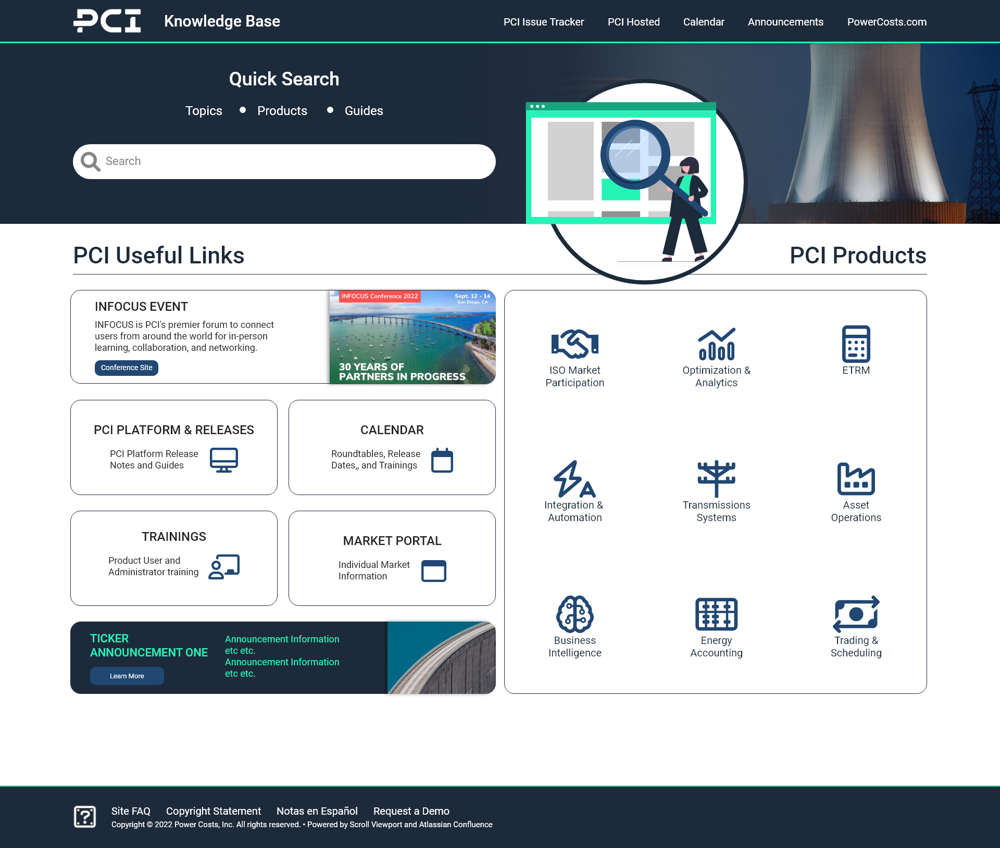
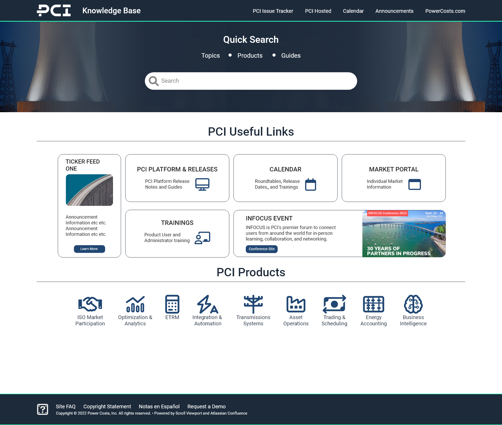
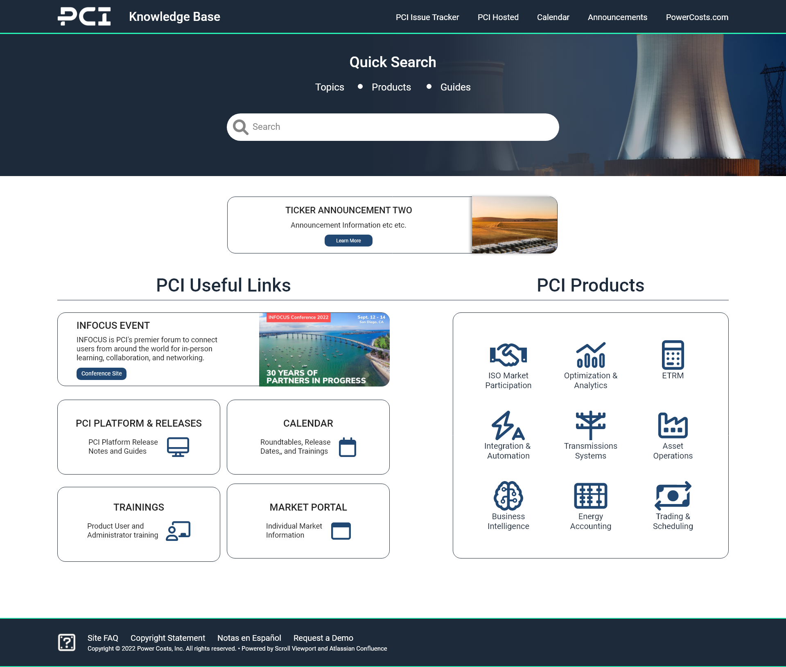
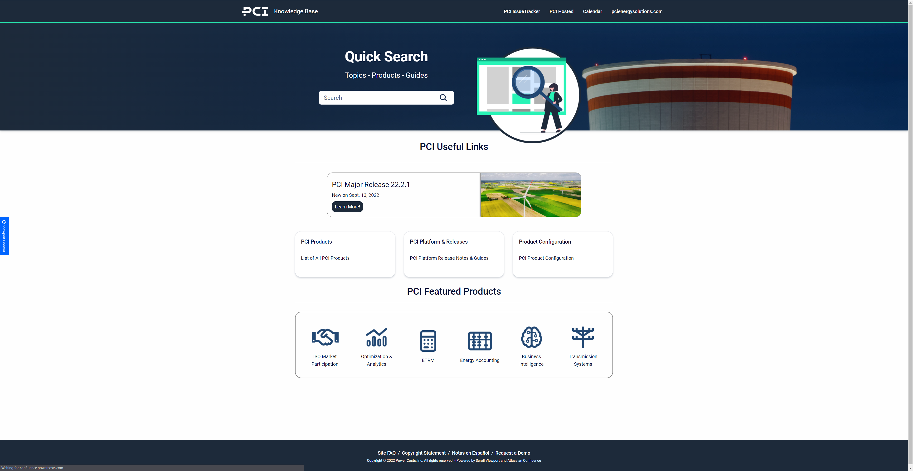

PCI Energy Solutions recently underwent a full rebranding effort. A new logo, color theme, and name were unveiled September of 2022. Part of the rebrnading effort included updating internal site tools to match the marketing efforts as well as improve usability where possible.
This project was an expedited approach to improve usability along with updating the overall UI for the Help Site. the before picture below shows some dated uses of web UI as well as obvious areas for improvement. The research conducted for this project was limited to secondary given the time constraints and the multiple roles played.
The current help site needed updating across the board. I approached this from a user's perspective as well as researched existing help sites that can provide a good reference point. Since help sites are nothing new, some of the ideal UX process could be expedited.
As mentioned before, the largest obstacles to overcome here involved the tools themselves. As with many help sites, this is hosted with a CMS, specifically Confluence and Scroll ViewPort technologies. I was limited to the use of a single custom JavaScript file and a single custom CSS file to implement changes in my designs.
I was able to use the first half of my time for the project to research good help site layouts as well as design a few options using our new brand assets. Below are three variations that were presented to stakeholders:
  After reviewing the above design choices with stakeholders, the choice was made to attempt the simplest form of changes. This decision was made with consideration to potential future tool upgrades as well as the known limitations for creative layouts.
I was able to work closely with our technicaly documentation team as they would be maintaing the help site after the changes were made. I decided to update the news feed carousel with some simple html/css/JS and utilized Codepen.io to test this feature and match the design files.
After building out the new JavaScript injected html, updated css, and testing was completed the final site is now running and utilized by PCI employees as well as clients.
Needless to say I am proud of the turnout for this project. The objective was to updated as best as possible with known limitations a client facing product as well as an internal tool to match our rebranding efforts. I was able to increase the usability as well by making the search component the front and center feature. The news ticker is below the main search feature as to not distract from the reason users visit the site to begin with.